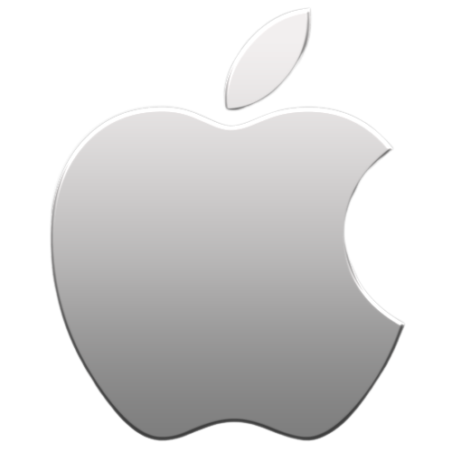

"Big Tech" se nanaša na vodilna tehnološka podjetja, ki imajo globalen vpliv na področjih informacijske
tehnologije, spletnih storitev in digitalnih inovacij. Ta podjetja, kot so Google, Amazon, Facebook, Apple
in Microsoft, se odlikujejo po svoji velikosti, finančni moči ter obsežnem naboru izdelkov in storitev, ki
jih ponujajo. Big Tech podjetja so ključni igralci v digitalnem svetu, ki oblikujejo našo spletno izkušnjo,
ponujajo platforme za komunikacijo, trgovino, iskanje informacij in druge storitve. Hkrati pa je v javnosti
vse več razprav o vprašanjih, povezanih z zasebnostjo, nadzorom nad podatki, močjo in vplivom teh podjetij
na družbo.
| Google je eno izmed največjih in najbolj prepoznavnih tehnoloških podjetij na svetu. Ustanovljen je bil leta 1998 in je znan predvsem po svojem iskalniku, ki omogoča hitro in učinkovito iskanje informacij na spletu. Poleg tega Google ponuja široko paleto izdelkov in storitev, vključno z elektronsko pošto (Gmail), spletnim brskalnikom (Chrome), kartami (Google Maps), oblačnim shranjevanjem (Google Drive) ter mobilnim operacijskim sistemom (Android). Google je priznan tudi kot pionir na področju umetne inteligence, razvoja pametnih naprav in tehnoloških inovacij. S svojo globalno prisotnostjo in široko paleto izdelkov ter storitev je Google postal nepogrešljiv del vsakodnevnega digitalnega življenja. | |
| Amazon je eno izmed največjih svetovnih e-trgovinskih podjetij, ustanovljeno leta 1994. Znan je po svoji spletni platformi, ki omogoča nakupovanje širokega spektra izdelkov, vključno z elektroniko, oblačili, knjigami, gospodinjskimi aparati in še veliko več. Poleg tega ima Amazon lastno linijo izdelkov, kot so e-bralniki Kindle, pametni zvočniki Echo in oblačno shranjevanje podatkov preko storitve Amazon Web Services (AWS). Amazon je tudi priznan zaradi svoje storitve hitre dostave, imenovane Amazon Prime, ki omogoča naročnikom hitro in brezplačno dostavo izdelkov ter dostop do video vsebin in drugih ugodnosti. S svojo globalno prisotnostjo in nenehnim razvojem je Amazon postal vodilno podjetje na področju spletnega nakupovanja in digitalnih storitev. | |

|
Facebook je ena največjih družbenih omrežij na svetu, ustanovljena leta 2004. Omogoča uporabnikom povezovanje in komunikacijo s prijatelji, družino ter drugimi ljudmi po vsem svetu. Uporabniki lahko delijo svoje fotografije, videoposnetke, misli in dogodke ter izražajo všečke in komentarje na objave drugih. Facebook je priljubljen tudi kot platforma za odkrivanje vsebin, novic, zabave in poslovnih storitev. Poleg glavnega družbenega omrežja Facebook, podjetje ponuja tudi druge priljubljene aplikacije, kot so Instagram in WhatsApp. Facebook je močan vpliv na našo spletno kulturo in omogoča povezovanje ljudi na globalni ravni. |
|  | Apple je eno izmed najbolj prepoznavnih tehnoloških podjetij na svetu, ustanovljeno leta 1976. Znani so po svoji inovativni ponudbi izdelkov, vključno z računalniki Mac, pametnimi telefoni iPhone, tabličnimi računalniki iPad, prenosnimi predvajalniki glasbe iPod ter pametnimi urami Apple Watch. Poleg tega Apple ponuja tudi široko paleto programske opreme, vključno z operacijskim sistemom macOS, mobilnim operacijskim sistemom iOS in glasbeno platformo Apple Music. Podjetje je znano po svojem elegantnem dizajnu, zmogljivih tehnologijah ter skrbi za uporabniško izkušnjo. Apple je tudi pionir na področju digitalne distribucije vsebin, kot so aplikacije, glasba, filmi in knjige preko svoje platforme App Store in drugih storitev. S svojim globalnim vplivom in zvesto skupnostjo uporabnikov je Apple postal sinonim za napredno tehnologijo in sodoben način življenja. |
| Microsoft je eno izmed največjih tehnoloških podjetij na svetu, ustanovljeno leta 1975. Znan je po svojem operacijskem sistemu Windows, ki se uporablja na večini osebnih računalnikov. Poleg tega Microsoft ponuja tudi širok nabor drugih izdelkov in storitev, vključno z igralno konzolo Xbox, produktivnostnimi programi Office, oblakom Azure, spletnim iskalnikom Bing ter platformo za razvijalce, imenovano Visual Studio. Microsoft je znan po svoji inovativnosti, kakovosti in zanesljivosti izdelkov, ki jih ponuja. Podjetje je vodilno tudi na področju poslovnih rešitev, kot so sistemi za upravljanje podatkov, poslovno analitiko ter storitve za upravljanje IT-infrastrukture. Z močno prisotnostjo v tehnološkem svetu in stalnim razvojem novih rešitev je Microsoft pomemben igralec na področju digitalne tehnologije. |